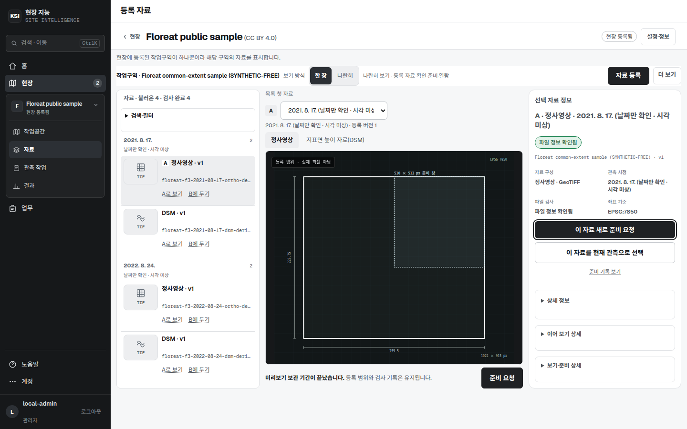
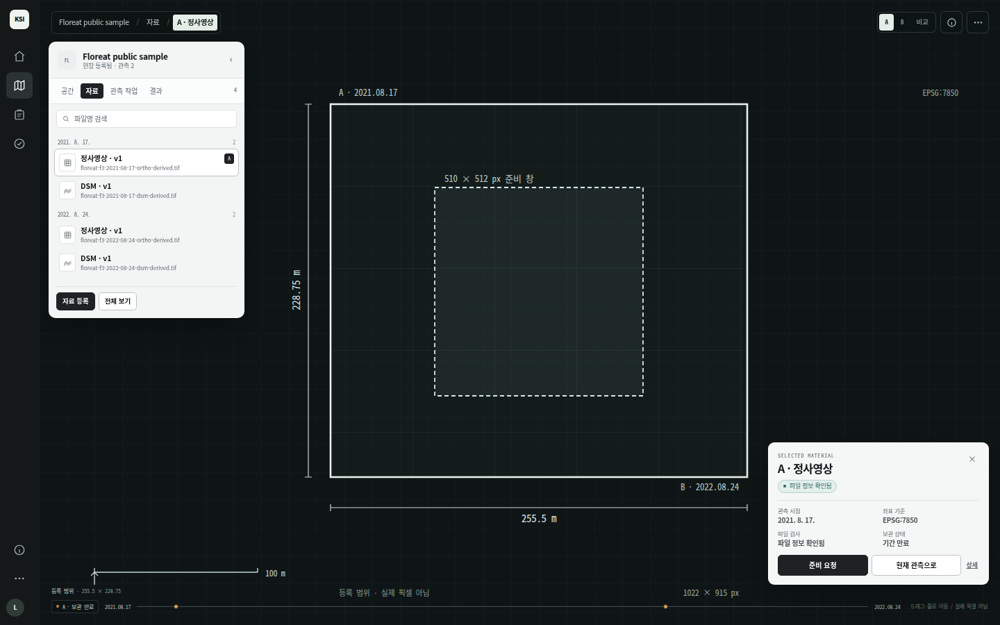

KSI Site Intelligence · Operations Console · Design decision
같은 Floreat 자료, 같은 실제 범위. 왼쪽은 현재의 3분할 패널, 오른쪽은 캔버스를 먼저 두고 레이어·정보를 떠 있는 패널로 낮춘 화면입니다. 무엇을 유지하고 어디까지 바꿀지 비교합니다.


| 관점 | Before · 3분할 | After · Viewer-first |
|---|---|---|
| 첫인상 | 목록과 정보가 먼저 읽힌다. “관리 화면”에 가깝다. | 공간과 범위가 먼저 읽힌다. “현장을 보고 있다”에 가깝다. |
| 현장 파악 | 캔버스가 좁아 범위·치수·준비 창을 동시에 보기 어렵다. | 캔버스가 화면 대부분을 차지해 범위·치수·준비 창이 한눈에 들어온다. |
| 자료 선택 | 목록 열이 항상 보여 선택은 쉽지만, 캔버스와 정보 공간을 줄인다. | 레이어 패널을 접고 펼칠 수 있어 선택과 공간 확보를 사용자가 고른다. |
| 선택 정보 | 항상 보이는 320px 정보 열. 상세 기록이 아래로 길다. | 떠 있는 카드에 핵심 4개 사실·행동. `상세`에서 기록을 연다. |
| 목록/관리 | 목록·필터·A/B가 한 열에 고정되어 관리 작업에 유리하다. | 레이어 패널은 탐색에 적합하지만, 대량 목록·필터·비교 관리에는 좁다. |
| 발견성 | 모든 것이 보여 처음 사용자가 이해하기 쉽다. | 아이콘·접힘·카드에 익숙해져야 한다. 키보드 토글과 첫 사용 안내가 필요하다. |
| 적합한 화면 | 자료 관리, 분석 결과 비교, 검토 큐처럼 표·폼이 중심인 화면. | 현장 공간, 자료 탐색, 3D/지도/정사영상 중심 화면. |
Recommendation · A
모든 화면을 같은 캔버스로 만들면 자료 관리·분석 비교·검토 큐에서 오히려 작업이 느려집니다. Viewer-first는 현장 > 공간과 현장 > 자료의 탐색 화면에 적용하고, 업무·결과·검토는 지금의 표/폼 중심 밀도를 유지하되 헤더·카드·장식을 줄입니다.